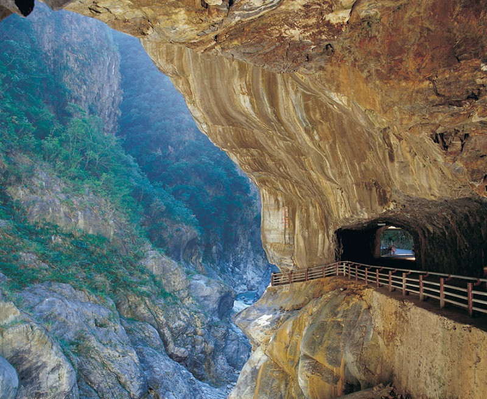

「太魯閣國家公園」座落於花蓮、臺中及南投三縣。其範圍以立霧溪峽谷、東西橫貫公路沿線及其外圍山區為主，包括合歡群峰、奇萊連峰、南湖中央尖山連峰、清水斷崖、立霧溪流域及三棧溪流域等，全部面積共計九萬二千公頃。範圍界線如下：
北部範圍：先經多加屯山、南湖北峰、南湖東峰之天然稜線，再沿林班界線 穿越大濁水南溪溪谷連接波浪山、二子山至曉星山之稜線。包括南湖大山、中央尖山等著名之山岳及獨特地形景觀，區內並富於植被景觀，以及種類繁多之野生動物。
東部範圍：由清水山連接卡那剛(和仁)溪出海口，經清水斷崖再由崇德隧道 附近沿立霧山，南下立霧溪出海口太魯閣，連接新城山、偶屈山、加禮宛山之天然稜線。東部區域包括奇特之大理岩峽谷、清水斷崖、神秘谷，以及三棧溪流域小太魯閣峽谷等地形景觀，並具有特殊之石灰岩植群以及針、闊葉混合林景觀。
南部範圍：由奇萊主峰向東轉突宙山支稜下巴托蘭溪谷，再北行巴托蘭山支稜至太魯閣大山主稜，連接立霧主山，南轉帕托魯山，其範圍界線清晰，區域內包括奇萊北峰險絕斷稜以及原生針葉林植被景觀。
西部範圍：南起昆陽、武嶺至合歡山、合歡西峰、合歡北峰天然稜線，下合歡溪谷，再接閂山，沿西側支稜連接茶岩山、多加屯山。本界線之東包括完整之中央山脈北段主稜脊，以及合歡山群優美之高山草原、冷杉純林植被景觀。